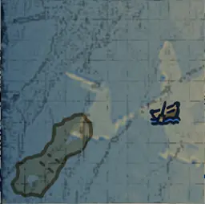

水图
5-1模块 (1F_09)EmptyModule_1F_09_D.json
EmptyModule_1F_09.webp (缓存) | 找到 1 个位置 | 范围: ±1600
↻1
-1000
3-1模块 (1F_14)EmptyModule_1F_14_D.json
EmptyModule_1F_14.webp (缓存) | 找到 1 个位置 | 范围: ±1600
↻0

-543
倾覆之船 (ShipGraveyard_FlippedShip)ShipGraveyard_FlippedShip_D.json
ShipGraveyard_FlippedShip.webp (缓存) | 找到 4 个位置 | 范围: ±1600
↻0

521
2
-915
-241
水手客栈 (ShipGraveyard_FloatingHouse_01)ShipGraveyard_FloatingHouse_01_D.json
ShipGraveyard_FloatingHouse_01.webp (缓存) | 找到 2 个位置 | 范围: ±1600
↻0

135
351
岩岛 (ShipGraveyard_RockIsland)ShipGraveyard_RockIsland_D.json
ShipGraveyard_RockIsland.webp (缓存) | 找到 1 个位置 | 范围: ±1600
↻3

2567
沉眠之船 (ShipGraveyard_SleepingShip)ShipGraveyard_ShipRest_D.json
ShipGraveyard_ShipRest.webp (缓存) | 找到 1 个位置 | 范围: ±1600
↻2

30
孵化池 (SpawningPool)ShipGraveyard_SpawningPool_HR_D.json
ShipGraveyard_SpawningPool.webp (缓存) | 找到 1 个位置 | 范围: ±1600
↻0

-978
海底洞穴 A (ShipGraveyard_UnderSeaCave_01)ShipGraveyard_UnderSeaCave_01_D.json
ShipGraveyard_UnderSeaCave_01.webp (缓存) | 找到 1 个位置 | 范围: ±1600
↻2

-653
海底洞穴 B (Shipgraveyard_UnderSeaCave_02)Shipgraveyard_TwinChamber_D.json
Shipgraveyard_TwinChamber.webp (缓存) | 找到 1 个位置 | 范围: ±1600
↻1

-677
废弃舰船 (AbandonedShip_01)ShipGraveyard_AbandonedShip_01_HR_D.json
ShipGraveyard_AbandonedShip_01.webp (缓存) | 找到 1 个位置 | 范围: ±3200
↻3

392
水上村落 (ShipGraveyard_FloatingVillage)ShipGraveyard_FloatingVillage_D.json
ShipGraveyard_FloatingVillage.webp (缓存) | 找到 1 个位置 | 范围: ±3200
↻0

8
钉手的藏身处 (ShipGraveyard_BladehandRefuge)ShipGraveyard_BladehandRefuge_D.json
ShipGraveyard_BladehandRefuge.webp (缓存) | 找到 2 个位置 | 范围: ±3200
↻0

570
227
海盗监狱 (PiratePrison)ShipGraveyard_PiratePrison_HR_D.json
ShipGraveyard_PiratePrison.webp (缓存) | 找到 7 个位置 | 范围: ±3200
↻1

1201
1208
1070
202
754
870
299